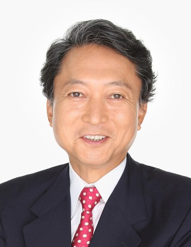
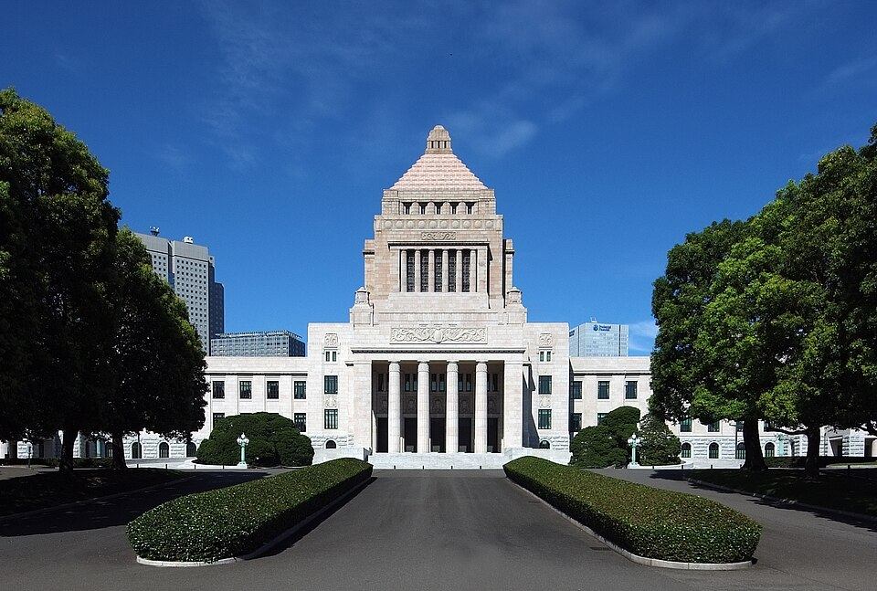
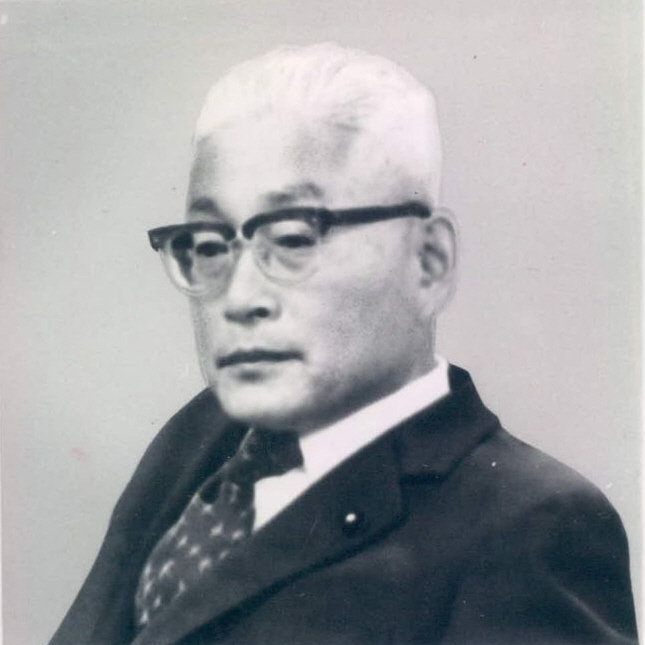

西
西松遥
にしまつ・はるか
日本航空代表取締役社長
役割：破綻前の経営責任を負う旧経営陣の中心人物。2010年1月19日に退任
その後：旧経営陣10
2009年〜2026年
日本航空は、経営統合後も不採算路線、大型機、人件費、企業年金、グループ会社などの構造的な負担を整理できないまま、米国同時多発テロ、SARS。リーマン・ショックなどの需要減に直面した。1
自主再建を見直した政府は、企業再生支援機構、東京地方裁判所、金融機関を組み合わせ。2010年1月19日に会社更生手続を開始した。旧株式を100％減資し、約5,215億円の債権放棄と3,500億円の出資を実施する再生だった。2
稲盛和夫と大西賢の新体制は、路線、機材、人員、年金、部門別採算を見直し、2011年3月に更生手続を終結させ。2012年9月19日に再上場した。3

再生の経過をさらに詳しく十分に確認する。1
日本航空は1953年設立の国内最大級の航空会社で、2002年度に日本エアシステムと経営統合した。破綻時点では国際線シェア約66％、国内線シェア約46％、1日約1,100便を運航していた。一方、統合後の組織、機材、路線の再編は十分に進まず、不採算路線、大型機、固定費、人件費、企業年金。グループ会社の多さが財務を圧迫した。国土交通省は、不採算路線と燃費効率の悪い大型機の大量保有等を構造的な高コスト体質として挙げている。24
2001年の米国同時多発テロ、2002年のSARS、2003年のイラク戦争。2008年のリーマン・ショックが航空需要を減らした。日本航空は2003年に政投銀から約700億円、2004年に約200億円の融資を受け、2006年に約1,400億円。2008年に約1,500億円の増資を実施した。2009年6月には政府保証付きで各1,000億円規模の緊急融資枠が確認された。資金調達は続いたが、過去からの負債と高コスト体質を解消するには至らなかった。35
2009年8月、国土交通省は有識者会議を設置し、9月25日にはJAL再生タスクフォースを設置した。民主党政権発足後、前原誠司国土交通相は従来の自主再建案をいったん白紙に戻し、資産査定と再建計画の作成を進めた。企業再生支援機構は10月29日に支援検討を開始し、11月10日、政府は支援機構への支援申込みと会社更生法の利用方針を確認した。西松遥ら旧経営陣による自主再建から、機構と裁判所の管理下での再建へ経営権が移る決定だった。678
この移行では、運航を継続することと、破綻前の責任を整理することが同時に課題となった。会社更生法の利用により、旧株主の責任、金融機関の債権。契約や資産の整理を裁判所の監督下で進める枠組みが用意された。国土交通省は、JAL再生を公的資金投入、会社更生法。プレパッケージ型法的整理の組合せとして説明した。政府は日本最大の航空運送事業者であるJALの再生が重大な公益、国益に関わると説明した。したがって、支援機構の出資は企業の資本を補うだけでなく、運航停止を避けるための政策判断として位置づけられた。96
2010年1月19日、日本航空、日本航空インターナショナル、ジャルキャピタルの3社は、主要金融機関と連名で企業再生支援機構に支援を申し込み、同日。東京地方裁判所に会社更生手続開始を申し立てた。裁判所は開始を決定し、企業再生支援機構と片山英二弁護士を管財人に選任した。3社の負債は合計約2兆3,221億円だった。西松らは退任し、管財人中心の新体制に移行した。政府は航空ネットワークを維持し、運航停止や利用者への影響を避けるため支援を表明した。4106
管財人は，平成22年8月26日にコンプライアンス調査委員会から調査結果の報告を受けました。同委員会は，更生会社において行われてきた経営に関し，経営判断あるいは企業統治に問題は存するものの，旧経営者に刑事上および民事上の法的責任は認め難いとの結論に達し，また，管財人は，コンプライアンス調査委員会による調査結果を踏まえ，旧役員に対する損害賠償請求権が存在するとは認められないと判断いたしましたのでお知らせします。
意味：経営上の問題は明確に認定しながら、旧経営陣への損害賠償請求までは認めなかった点が重要である。[同資料](https://www.jal.co.jp/other/100831_03.pdf)
2010年2月1日、京セラ名誉会長の稲盛和夫が無報酬で会長に就任し、大西賢が社長に就任した。稲盛はアメーバ経営、JALフィロソフィ、部門別採算制度を再建で重点とし。路線・部門ごとの収入と費用を可視化した。JALは、社員が収入と費用を意識する仕組みを路線、機材。人員の再編と一体で説明した。ただし、アメーバ経営だけが利益改善を直接生んだ因果関係を数量的に分離した公開検証は未確認である。1112
日本航空 会長 稲盛 和夫 ただ今、ご紹介いただきました稲盛でございます。 このたび日本航空の会長に就任をいたしました。本日は、会長就任に際しての、私の思いをお話しさせていただきたいと思います。 皆様すでにご存知のように、日本航空は、1月19日、会社更生法の適用を申請し、企業再生支援機構の支援のもと、再生への道のりを歩み始めております。 このような法的整理の道を選んだため、これまで築き上げてきました日本航空のブランドイメージが大幅に低下するのではないか、また社員のモラルが低下し、航空機の運航にも支障が生じるのではないかと危惧する声も多々ございました。 しかし、お蔭様で、JALグループの運航には何の混乱もなく、従来通り、多くのお客様にご搭乗いただいております。
意味：法的整理がブランド・社員士気・安全運航に与える懸念を、就任直後の会長が正面から語っている。[会見](https://www.jal.co.jp/other/info2010_0201.html)
2010年8月31日、管財人は更生計画案を東京地方裁判所に提出した。計画は、旧株式の100％減資、企業再生支援機構による3,500億円の出資、一般更生債権の87.5％免除、3社の合併、企業年金の給付減額。人員・路線・機材の削減を組み合わせた。金融機関等の債権放棄額は約5,215億円で、現役社員とOBの年金も減額された。旧株主、金融機関、従業員が負担を担い。日本航空は債務と資本構成を再構築した。1314
企業再生支援機構は2010年12月1日に3,500億円を出資し、当初は普通株式1億7,500万株を取得して全議決権を保有した。更生3社は合併し、2011年4月には商号を日本航空株式会社へ変更した。金融機関等の債権放棄は残余の弁済と組み合わされ、JALは2011年3月に11金融機関から約2,550億円を調達して更生債権等を一括弁済した。資本の出し手、債権者、旧株主の位置が同時に変わる計画であり。破綻前の株主構成を維持したままの再建ではなかった。1516
被控訴人は，同月3日から第1次希望退職措置を開始したが，10月1日から始まる第2次希望退職措置直前の9月27日に，突然に整理解雇の人選基準を発表し，それに該当する運航乗務員に対して10月1日からブランクスケジュールを強行した。発表された人選基準は，現に組合活動で中心を担ってきた者や組合役員経験者を解雇対象者とし，航空安全を阻害するものとなっていたのであり，この基準の設定自体が不当労働行為である。 被控訴人は，人選基準の発表と同時にブランクスケジュールを実施し，対象者を乗務から外した上で，個人面談を強要した。それは，希望退職に応じずに整理解雇された場合の個々人の不利益の説明だけでなく，退職に応じなければ，再び会社が破綻し，その責任は退職に応じない面談対象者にあるかのような説明をするものであった。
意味：人員削減をめぐる会社側と組合側の緊張、退職勧奨の圧力が具体的に示される。[判決文](https://www.courts.go.jp/app/files/hanrei_jp/989/084989_hanrei.pdf)
JALは事業規模を約60％に縮小し、従業員数を40％削減、人件費単価を20％削減、企業年金を最大53％削減し。グループ会社を半減したと説明している。2010年末には運航乗務員81人、客室乗務員84人の合計165人が整理解雇された。元乗務員らは解雇の有効性を争い、東京地裁、東京高裁で敗訴し。最高裁は2015年2月に上告棄却・不受理として東京事件の会社側勝訴を確定させた。一方、大阪地裁が客室乗務員の解雇を無効とした別事件もある。121718
被控訴人は，同月3日から第1次希望退職措置を開始したが，10月1日から始まる第2次希望退職措置直前の9月27日に，突然に整理解雇の人選基準を発表し，それに該当する運航乗務員に対して10月1日からブランクスケジュールを強行した。発表された人選基準は，現に組合活動で中心を担ってきた者や組合役員経験者を解雇対象者とし，航空安全を阻害するものとなっていたのであり，この基準の設定自体が不当労働行為である。 被控訴人は，人選基準の発表と同時にブランクスケジュールを実施し，対象者を乗務から外した上で，個人面談を強要した。それは，希望退職に応じずに整理解雇された場合の個々人の不利益の説明だけでなく，退職に応じなければ，再び会社が破綻し，その責任は退職に応じない面談対象者にあるかのような説明をするものであった。
意味：人員削減をめぐる会社側と組合側の緊張、退職勧奨の圧力が具体的に示される。[判決文](https://www.courts.go.jp/app/files/hanrei_jp/989/084989_hanrei.pdf)
2011年3月28日、JALは11金融機関から約2,550億円を調達して更生債権等を一括弁済し。東京地方裁判所は会社更生手続の終結を決定した。2012年8月3日、東証は再上場を承認し、9月19日にJALは市場第一部へ再上場した。売出価格は3,790円、時価総額は約6,873億円だった。JALは3,500億円の出資額を毀損せず国庫に返還できたと説明したが、政府保証、債権放棄、税制上の優遇。労働者と旧株主の負担を含む公的支援全体の費用は別途評価を要する。2026年6月23日時点で、赤坂祐二が会長、鳥取三津子が社長を務めている。16151920
再建の結果は、単独の経営手法だけで説明できない。旧株主の100％減資、金融機関による約5,215億円の債権放棄、企業年金の給付減額、人員約40％削減。路線と機材の縮小が同じ更生計画に含まれていた。企業再生支援機構は資本を提供し、金融機関は債権者として計画に同意し、東京地方裁判所は更生計画を認可して手続を終結させた。稲盛と大西は再建経営を担い、2012年の再上場では支援機構が保有株を売却した。この間、運航継続と利用者のマイレージ保護が図られた一方、旧株主、従業員。金融機関は異なる負担を受けた。再上場後のJALは、破綻前とは異なる資本構成と事業規模で存続した。131516
明日9月19日で、当社が東京証券取引所第一部に再上場してから丸1年を迎えます。この1年を振り返る前に、まずは2010年1月19日の会社更生法の適用申請に始まり、お客さま、旧株主の皆さま、社会の多くの皆さまに大変なご迷惑をおかけしましたことを、あらためまして深くお詫び申し上げます。 破綻後に、企業再生支援機構様より3500億円のご出資をいただき、支援期限内の2012年9月19日に再び上場することができました。売出価格3790円、結果的に時価総額6873億円での上場となり、企業再生支援機構様からの出資額を毀損することなく、国庫にお返しすることができたわけですが、これについては何よりもこの期間中に従前にも増してご利用いただいたお客さま、お取引先様をはじめ、多くの皆さまのご理解、ご支援の賜物であり、心から御礼を申し上げます。
意味：再上場後の経営陣が、破綻への謝罪と公的出資の返還を同時に説明した。[会見](https://www.jal.com/cms/ja/corp_00269.html)


| 日本航空旧本社（JALビル） | 東京都品川区東品川2-4-11 | 破綻当時の本社 | 34 |
| 東京地方裁判所 | 東京都千代田区霞が関1-1-4 | 更生手続開始・認可・終結を扱った裁判所 | 35 |
| 国土交通省 | 東京都千代田区霞が関2-1-3 | 航空行政・政府支援を担当 | 36 |
| 東京証券取引所 | 東京都中央区日本橋兜町2-1 | 2012年9月19日の再上場市場 | 37 |
| 京セラ本社 | 京都府京都市伏見区竹田鳥羽殿町6 | 稲盛和夫の経営基盤 | 38 |
| 羽田空港 | 東京都大田区羽田空港 | JALの主要国内拠点・運航ネットワーク | 39 |
| 成田国際空港 | 千葉県成田市古込1-1 | JAL国際線の主要拠点 | 40 |
| 大阪国際空港 | 大阪府豊中市蛍池西町3-555 | 国内線ネットワークの主要拠点 | 41 |
| 東京証券取引所市場第一部 | 東京都中央区日本橋兜町2-1 | 再上場の場 | 30 |
中心は会計帳簿の架空計上ではなく、会社更生手続による資産評価、債権確定、債務免除、減資、出資。年金債務削減である。26
にしまつ・はるか
日本航空代表取締役社長
役割：破綻前の経営責任を負う旧経営陣の中心人物。2010年1月19日に退任
その後：旧経営陣10
いなもり・かずお
JAL会長
役割：2010年2月1日に就任し、アメーバ経営と部門別採算制度を導入
その後：2022年死去11
おおにし・まさる
日本航空代表取締役社長
役割：稲盛会長と再建を担当
その後：2011年の更生手続終結時も社長42
うえき・よしはる
JAL社長
役割：2012年再上場時の社長として公的出資の返還を説明
その後：再上場後の経営陣19
かたやま・えいじ
更生管財人・弁護士
役割：2010年1月19日に管財人に選任
その後：更生手続を担当4
まえはら・せいじ
国土交通大臣
役割：自主再建案を見直し、法的整理を軸とする再建を進めた
その後：政府側の政策決定者43
はとやま・ゆきお
内閣総理大臣
役割：政府によるJAL再生方針の内閣の首相
その後：具体的な個別指示の内容は未確認5
かねこ・かずよし
国土交通大臣
役割：2009年のJAL向け緊急融資の政府関与に関係
その後：政府側関係者5
かわもと・としお
企業再生支援機構側担当者
役割：国会でJALの人員削減計画を説明
その後：支援機構側関係者44
ながた・たかし
国土交通省政府参考人
役割：2010年1月19日時点のJAL欠損金を国会で説明
その後：政府側関係者45
まつだ・まさし
JAL取締役
役割：事件当時の取締役。2010年1月19日に退任
その後：旧経営陣10
いしはら・くにお
JAL取締役
役割：事件当時の取締役。2010年1月19日に退任
その後：旧経営陣10
かなやま・よしまさ
ジャルキャピタル社長
役割：更生3社の一社の経営者として体制資料に記載
その後：旧経営陣側関係者10
あらい・さとし
政府側閣僚
役割：JAL再建に関する政府方針・国会答弁の文脈で言及
その後：政府側関係者46
のだ・よしひこ
財務大臣
役割：JAL再建への政府支援に関する閣僚協議に関係
その後：政府側関係者46
相関図は、破綻前の旧経営陣、政府・裁判所・企業再生支援機構、再建経営陣、金融機関、従業員。再上場市場の関係を示す。線の種類は協力、対立、告発、金銭。上下関係を表す。
上司と部下。2010年2月1日、稲盛が会長、大西が社長に就任し。会社更生中のJAL再建を共同で担った。JAL11
対立・確執。西松は破綻当日に退任し、稲盛はその後の再建会長となった。旧経営陣から外部再建者への交代という権力移行だった。JAL経営体制資料10
対立・確執。西松ら旧経営陣の退任後、片山が管財人として更生会社の運営監督に入った。JAL10
対立・確執。旧経営陣の自主再建から、機構・裁判所による法的整理へ経営権が移った。REVIC8
盟友。稲盛が経営面、機構が資本・債権・再生計画面を担い、同じ更生計画を実行した。国土交通省1
盟友・庇護。稲盛は京セラ名誉会長としてJAL会長に就任した。京セラでの経営経験がJAL再建に持ち込まれた。JAL会見11
庇護・口利き。稲盛の周囲にいた盛和塾関係者がJAL応援団を作ったとJAL会見で説明されている。金銭支援の事実は未確認。JAL47
対立・確執。前原国交相は従来の自主再建路線を見直し、タスクフォースと法的整理に移行した。国土交通省43
庇護・口利き。前原政権下で稲盛が外部から会長に迎えられ、政府・機構・裁判所による再建体制に組み込まれた。JAL11
資金の出し手と受け手。機構は債権買取や出資を行い、金融機関には債権放棄・再建協力を求めた。REVIC15
対立・確執。更生計画により旧株式は100％減資され、機構の出資株式が新たな資本となった。国土交通省資料13
資金の出し手と受け手。2011年3月、JALは11金融機関から約2,550億円を調達して更生債権等を一括弁済した。JAL16
対立・確執。2010年末、乗務員165人が解雇され、解雇無効訴訟に発展した。東京事件では会社側勝訴が確定した。民主法律協会33
上司と部下。稲盛はJALフィロソフィと部門別採算制度を導入し、社員の意識改革を再建の重点にした。JAL12
庇護・口利き。国土交通省は、航空ネットワーク維持を理由に機構支援と更生手続を政策的に後押しした。国土交通省7
資金の出し手と受け手。政府は政投銀を通じた危機対応融資を支え、JALの資金繰りを維持した。会計検査院22
○河本参考人 まず、更生計画上の人員削減計画人数としては、ＪＡＬグループ連結で、いわゆる希望退職にて約六千四百人、子会社の再編で約六千人、その他、契約終了、定年退職及び自然減で約三千七百人の削減を計画しております。その達成状況につきましては、本年十月二十二日までで、いわゆる希望退職で約五千六百人、子会社再編で約三千百人、その他、契約終了、定年退職及び自然減で約二千九百人となっております。 また、職種別の内訳についての御質問もいただいておりますが、この点につきましては、更生計画上の人員削減計画人数としては、ＪＡＬグループ連結で、運航乗務職で約九百人、客室乗務職で約二千七百人、整備職で約千九百人、その他地上職で約一万六百人の削減を計画しております。その達成状況につきましては、本年十月二十二日までで、運航乗務職で約七百人、客室乗務職で約二千百人、整備職で約千九百人、その他地上職で約六千九百人となっております。
意味：再生計画が、職種別・制度別の大規模な雇用削減を前提としていたことを示す。[会議録](https://www.shugiin.go.jp/internet/itdb_kaigirokua.nsf/html/kaigirokua/009917620101112005.htm)
公的資料で確認できる中心は、運輸族政治家や地方自治体との路線政策上の近さ、公的融資。企業再生支援機構の出資である。総会屋、暴力団、仕手筋、海外口座、不審死について。具体的な金銭授受や口封じを公的資料が認定した事実は確認できない。
運輸族議員・地方政治家 報道
地方自治体・政治家 指摘
日本政府、政投銀。国際協力銀行 認定
企業再生支援機構 認定
稲盛和夫、盛和塾関係者 報道
総会屋、暴力団 疑惑
仕手筋・証券会社 疑惑
海外口座・ペーパーカンパニー 疑惑
政治家・政党 疑惑
個人・闇社会 疑惑
日本航空の再生には、公的資金投入と会社更生法の適用、プレパッケージ型法的整理の併用と言う、特殊な手法が用いられました。 会社更生法の適用 4 債権者・株主間の利害調整 9 債権放棄約5,200億円9 100％減資 4 更正会社のみに適用される税制上の優遇措置（9年間で約4,000億円の法人税減免効果） 9 資産評価損の損金算入9 期限切れ欠損金の損金算入9 繰越欠損金の100％控除 公的資金の投入 4 企業再生支援機構から用途制限の無い公的資金の注入（約3,500億円） 4 つなぎ融資（約3,600億円） プレパッケージ型法的整理 4 日本国政府からの債権保全声明4 アンセット航空・スイス航空破綻時のような運航停止を回避
意味：再生の仕組みが、債権者・旧株主・納税者・競合企業に影響する複合的な公的支援だったことを示す。[PDF](https://www.mlit.go.jp/common/000987883.pdf)
| 日本航空 | 5215億円 | 0億円 | 債権放棄等で債務・資本構成を再構築 | 9 |
| 企業再生支援機構・国庫 | 3500億円 | 0億円 | 出資額を再上場時に回収。純額は未確認 | 15 |
| 金融機関 | 2550億円 | 5215億円 | 債権放棄の一方、2011年に一括弁済 | 16 |
| 旧株主 | 0％ | 100％ | 100％減資で投資価値を失った | 12 |
| 従業員 | 0％ | 53％ | 年金最大53％削減。人員40％削減、165人整理解雇 | 12 |
| 取引先・利用者 | 1件 | 0件 | 運航継続とマイレージ保護 | 49 |
| 国民 | 1件 | 0件 | 航空ネットワーク維持の利益。潜在的負担は別途評価 | 9 |
| 再建後の新株主 | 0円 | 0円 | 3,790円で再上場株を取得。個別損益は未確認 | 19 |
| 公的資料 | 未確認 | 代表的な経営陣が有罪判決を受けた事実は確認できない |
会社更生・再生手続に関する粉飾・背任等。刑事確定判決は未確認50
| 東京地裁 | 2012-03 | 請求棄却 |
| 東京高裁 | 2014-06-05 | 原告敗訴 |
| 最高裁 | 2015-02 | 上告棄却・不受理、会社側勝訴確定 |
整理解雇の無効・地位確認等。東京事件は確定。大阪の客室乗務員事件は大阪地裁が解雇無効3351
| 東京地裁 | 2010-01-19 | 更生手続開始 |
| 東京地裁 | 2010-11-30 | 更生計画認可 |
| 東京地裁 | 2011-03-28 | 更生手続終結 |
| 東京証券取引所 | 2012-08-03 | 再上場承認 |
| 東京証券取引所市場第一部 | 2012-09-19 | 再上場 |
管財人は，平成22年8月26日にコンプライアンス調査委員会から調査結果の報告を受けました。同委員会は，更生会社において行われてきた経営に関し，経営判断あるいは企業統治に問題は存するものの，旧経営者に刑事上および民事上の法的責任は認め難いとの結論に達し，また，管財人は，コンプライアンス調査委員会による調査結果を踏まえ，旧役員に対する損害賠償請求権が存在するとは認められないと判断いたしましたのでお知らせします。
意味：経営上の問題は明確に認定しながら、旧経営陣への損害賠償請求までは認めなかった点が重要である。[同資料](https://www.jal.co.jp/other/100831_03.pdf)
こうした調査の結果に基づき，コンプライアンス調査委員会は，過去の経営に関する旧経営者の法的責任の有無を検討するとともに，更生会社に内包する問題点，すなわち，肥大化した組織，脆弱な企業体質および財務，政官民のもたれ合いの構造，閉鎖的なセクショナリズム，企画経営部門と現場との遊離，経営トップの責任ある経営課題への取組みや経営判断の欠如ならびに全社的な危機意識の欠落等を指摘しました。
意味：破綻を単純な財務問題ではなく、組織文化と人脈・意思決定構造の問題として捉えている。[同資料](https://www.jal.co.jp/other/100831_03.pdf)
コスト面では、航空需要の見通しを誤り、機種の削減や機材の小型化が遅れたうえ、地元自治体や労働組合の反発などを配慮するあまり、不採算路線からの撤退や思い切った人件費の削減に踏み込めず、高コスト体質が温存されることとなった。 財務面では、過去の為替差損やホテル事業・リゾート事業の失敗により従来から財務体質が脆弱であったが、その後もその体質は改善されず、借入金、社債、リースなどの負債が多額に上り、2008年度末時点の自己資本比率は10.0％と低く、極めて脆弱な財務体質のままであった。 上記のような収益・費用・財務の状況であったところ、2008年半ばまでの燃油高騰による経費の増加とデリバティブ取引の失敗による損失の拡大、さらにはリーマンショックによる国際線の大幅な減収により、資金繰りが急速に悪化して破綻に至ったものである。
意味：不採算路線や人件費削減を進められなかった背景に、自治体・労組への配慮があったと記述している。[同資料](https://www.jal.co.jp/other/100831_04.pdf)
被控訴人は，同月3日から第1次希望退職措置を開始したが，10月1日から始まる第2次希望退職措置直前の9月27日に，突然に整理解雇の人選基準を発表し，それに該当する運航乗務員に対して10月1日からブランクスケジュールを強行した。発表された人選基準は，現に組合活動で中心を担ってきた者や組合役員経験者を解雇対象者とし，航空安全を阻害するものとなっていたのであり，この基準の設定自体が不当労働行為である。 被控訴人は，人選基準の発表と同時にブランクスケジュールを実施し，対象者を乗務から外した上で，個人面談を強要した。それは，希望退職に応じずに整理解雇された場合の個々人の不利益の説明だけでなく，退職に応じなければ，再び会社が破綻し，その責任は退職に応じない面談対象者にあるかのような説明をするものであった。
意味：人員削減をめぐる会社側と組合側の緊張、退職勧奨の圧力が具体的に示される。[判決文](https://www.courts.go.jp/app/files/hanrei_jp/989/084989_hanrei.pdf)
○河本参考人 更生計画にはその旨までの記載はしてございませんが、労働組合に対してはその旨御説明をさせていただいております。 ○穀田委員 公的に明らかにした更生計画の中に、一万六千人を削減すると書いている。この数字の中にもあるように、それは一人一人、パイロットについても、客室乗務員についても、整備職についても、事務系地上職についても、あなたがおっしゃっているような実績、計画の中に全部入っていないなんということをどこに書いていますか。書いたことはないですよ、一度も。 （中略） ○河本参考人 在籍数については在籍数として御説明し、削減の予定数については稼働ベースにて御説明をさせてきていただいているところでございます。 ○穀田委員 今、皆さん聞いてわかりましたか。自分の説明はそうだとわかっているんですよ。あなたが説明しているのは、稼働ベースでやっているという話を何回もしているだけなんですよ。それを組合にも言ったと言っているだけなんですよ。満天下に、三万数千人というのは稼働ベースか、それを削って一万六千人とやるときに、これは稼働ベースの話だと言ってきたのかと言っているんですよ。はっきりしているじゃないか、質問の内容は。 ○河本参考人 その点については明示はしておりません。
意味：公表された削減人数と、実際の算定基準をめぐる説明の食い違いが、国会で厳しく追及された。[会議録](https://www.shugiin.go.jp/internet/itdb_kaigirokua.nsf/html/kaigirokua/009917620101112005.htm)
○前原国務大臣 窮境原因の御質問でございますけれども、これは、まずは外的な要因としては、先ほどから申し上げているような、国際線における、インフルエンザとかあるいはリーマン・ショックとか、そういったものによって落ちるということもあるでしょうし、あるいは、これは反論されるかもしれませんけれども、空港をたくさんつくって、そしてそれを飛ばすことによって、現実問題として、国内線の需要予測とは全く乖離をするという状況になって、赤字の原因の、すべてとは言いません、一部になっているのも事実だと私は思います。 それと同時に、今、大西社長さんの言葉を引用されてお話をされましたけれども、事業構造が硬直化していた。これは、大型の機材の大量保有とか不採算路線の維持とか、そういったものだと思います。それから、組織体制の硬直化。これは人員の余剰、あるいは、特にＪＡＳとの統合後の話だと思いますけれども、組織の肥大化、硬直化というものが行われていく。あるいは、これは稲盛会長が時々お話をされておりますけれども、意思決定の遅滞とか、あるいは会社全体としての経営感覚の欠如、こういったさまざまな問題が合わさって、結果として二兆三千億余の負債を生んでしまったのではないか、私はそう思っております。
意味：国土交通相自身が、路線・機材・組織・意思決定の複合的な問題を破綻原因として説明した。[会議録](https://kokkai.ndl.go.jp/simple/detail?minId=117404319X01420100421)
○中島（隆）委員 先ほど来質問がされておりますが、コンプライアンス調査委員会の調査報告書もお聞きをいたしました。その中で、日本航空の経営破綻の一端にずさんな経営管理があると指摘をされています。実態以上の資産や営業利益を拡大させる会計処理、あるいは、巨額の損失をもたらしたデリバティブ取引や和歌山市内の土地の購入問題等が指摘をされています。 過去の経営責任は法的には問えないという形で報告をされているんですが、しかし、このようなずさんな会計処理、経営体制が日本航空の再建をおくらせ、ひいては取引銀行、株主あるいは職員に多大な犠牲、負担を強いるという結果になっているというふうに思っております。 ○前原国務大臣 前最高裁判所判事の才口千晴弁護士を初めとする外部委員五名によるコンプライアンス調査委員会から八月二十六日に管財人に提出されました調査報告書によれば、旧経営陣に刑事上及び民事上の法的責任は認めがたいとされておりますが、一方で、同報告書では、経営トップの責任ある経営問題への取り組みや経営判断の欠如並びに全社的な危機意識の欠落等が問題点の一部として指摘をされているのは、今委員がお示しのとおりでございます。
意味：法的責任と経営責任を分けて捉える政府答弁である。[会議録](https://www.shugiin.go.jp/internet/itdb_kaigirokua.nsf/html/kaigirokua/009917520100910002.htm)
日本航空 会長 稲盛 和夫 ただ今、ご紹介いただきました稲盛でございます。 このたび日本航空の会長に就任をいたしました。本日は、会長就任に際しての、私の思いをお話しさせていただきたいと思います。 皆様すでにご存知のように、日本航空は、1月19日、会社更生法の適用を申請し、企業再生支援機構の支援のもと、再生への道のりを歩み始めております。 このような法的整理の道を選んだため、これまで築き上げてきました日本航空のブランドイメージが大幅に低下するのではないか、また社員のモラルが低下し、航空機の運航にも支障が生じるのではないかと危惧する声も多々ございました。 しかし、お蔭様で、JALグループの運航には何の混乱もなく、従来通り、多くのお客様にご搭乗いただいております。
意味：法的整理がブランド・社員士気・安全運航に与える懸念を、就任直後の会長が正面から語っている。[会見](https://www.jal.co.jp/other/info2010_0201.html)
日本航空の再生には、公的資金投入と会社更生法の適用、プレパッケージ型法的整理の併用と言う、特殊な手法が用いられました。 会社更生法の適用 4 債権者・株主間の利害調整 9 債権放棄約5,200億円9 100％減資 4 更正会社のみに適用される税制上の優遇措置（9年間で約4,000億円の法人税減免効果） 9 資産評価損の損金算入9 期限切れ欠損金の損金算入9 繰越欠損金の100％控除 公的資金の投入 4 企業再生支援機構から用途制限の無い公的資金の注入（約3,500億円） 4 つなぎ融資（約3,600億円） プレパッケージ型法的整理 4 日本国政府からの債権保全声明4 アンセット航空・スイス航空破綻時のような運航停止を回避
意味：再生の仕組みが、債権者・旧株主・納税者・競合企業に影響する複合的な公的支援だったことを示す。[PDF](https://www.mlit.go.jp/common/000987883.pdf)
対象事業者につきましては、2010年1月19日に株式会社企業再生支援機構法（平成21年法律第63号、その後の改正も含む。以下「法」という。）第25条第4項に規定する支援決定を行い、同年3月26日に法第28条第1項に規定する買取決定、同年8月31日に法第31条第1項に規定する出資決定を行い、同年12月更生計画に沿って出資しました。 事業再生の進捗状況を勘案しながら、再生支援の完了方法を検討して参りましたが、その方途のひとつとしての再上場に関し、本日対象事業者に対し東京証券取引所から上場承認を頂戴いたしました。本年9月19日に予定されている対象事業者の株式公開時に、機構保有全株式を売却し、以って支援の終了を予定致します。 機構は、対象事業者に対して、3,500億円の出資により、普通株式175,000,000株を取得し、全議決権を保有していました。その後、対象事業者における追加増資の実施により、機構は、現在、議決権の96.5％にあたる株式を保有しており、この機構保有株式の全てを売却する予定です。
意味：公的支援機構が大株主として再建を主導し、再上場を出口としたことが分かる。[資料](https://www.revic.co.jp/pdf/news/2012/120803newsrelease.pdf)
明日9月19日で、当社が東京証券取引所第一部に再上場してから丸1年を迎えます。この1年を振り返る前に、まずは2010年1月19日の会社更生法の適用申請に始まり、お客さま、旧株主の皆さま、社会の多くの皆さまに大変なご迷惑をおかけしましたことを、あらためまして深くお詫び申し上げます。 破綻後に、企業再生支援機構様より3500億円のご出資をいただき、支援期限内の2012年9月19日に再び上場することができました。売出価格3790円、結果的に時価総額6873億円での上場となり、企業再生支援機構様からの出資額を毀損することなく、国庫にお返しすることができたわけですが、これについては何よりもこの期間中に従前にも増してご利用いただいたお客さま、お取引先様をはじめ、多くの皆さまのご理解、ご支援の賜物であり、心から御礼を申し上げます。
意味：再上場後の経営陣が、破綻への謝罪と公的出資の返還を同時に説明した。[会見](https://www.jal.com/cms/ja/corp_00269.html)
○河本参考人 まず、更生計画上の人員削減計画人数としては、ＪＡＬグループ連結で、いわゆる希望退職にて約六千四百人、子会社の再編で約六千人、その他、契約終了、定年退職及び自然減で約三千七百人の削減を計画しております。その達成状況につきましては、本年十月二十二日までで、いわゆる希望退職で約五千六百人、子会社再編で約三千百人、その他、契約終了、定年退職及び自然減で約二千九百人となっております。 また、職種別の内訳についての御質問もいただいておりますが、この点につきましては、更生計画上の人員削減計画人数としては、ＪＡＬグループ連結で、運航乗務職で約九百人、客室乗務職で約二千七百人、整備職で約千九百人、その他地上職で約一万六百人の削減を計画しております。その達成状況につきましては、本年十月二十二日までで、運航乗務職で約七百人、客室乗務職で約二千百人、整備職で約千九百人、その他地上職で約六千九百人となっております。
意味：再生計画が、職種別・制度別の大規模な雇用削減を前提としていたことを示す。[会議録](https://www.shugiin.go.jp/internet/itdb_kaigirokua.nsf/html/kaigirokua/009917620101112005.htm)
企業再生支援機構による出資・債権買取・事業再生計画の組合せが実施され、後継機関に引き継がれた。8
JAL再生を契機に、公的資金投入が競争環境を歪めるかを検討する国土交通省小委員会が設置された。52
不採算路線、大型機、ホテル等の非中核事業を見直し。航空事業への集中を進めた。13
金融機関、支援機構、裁判所の協議を事前に進め。申立て当日に支援決定と更生開始を行う方式が示された。9
現役社員・OB双方の給付減額を実施した。制度全体を直接改正した因果関係は未確認。13
更生手続中の企業再建でも整理解雇の必要性、人選、手続が争点となり。東京高裁判決が確定した。51
公的支援機構が保有株を市場売却し、支援を終了する出口モデルが示された。15
JAL側：出資3,500億円を含む支援で運航、マイレージ、取引先を保護し。再上場で出資額を毀損せず国庫に返還できたと説明した。19
批判側：100％減資、巨額債権放棄、政府保証、税制優遇を組み合わせた例外的な救済で。競合他社との公平性を損なう可能性があると指摘した。53
国土交通省：大型機の大量保有、不採算路線などの構造的高コストを原因として挙げた。2
国会での指摘：運輸族政治家とJAL、地方路線・空港整備の関係を議論した。ただし、特定政治家が違法に路線を強制した司法認定は確認できない。48
JAL側：更生計画に沿って事業規模を縮小するには人員削減が必要だったと主張した。44
原告側：2010年末に165人を解雇する必要性、解雇回避努力、人選の合理性を争った。33
JAL：JALフィロソフィと部門別採算制度を再生の要素として説明した。12
公開資料の確認範囲：利益改善が稲盛の手法だけによるものか、債務免除、人員削減、路線撤退。景気回復等の複合効果かを分離した検証は未確認。12